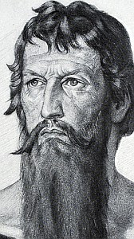

„Hoće li tko za mnom, neka se odreče samoga sebe, neka uzme svoj križ i neka ide za mnom.” (Mt 16,24)

Sveti Nikola von Flüe, poznat kao brat Klaus, bio je neobičan spoj obiteljskog čovjeka, hrabrog vojnika i mističnog pustinjaka. Rođen 1147. godine, proveo je 22 godine u sretnom braku s Doroteom Vis, s kojom je imao desetero djece. Kao ugledni član društva, služio je kao sudac i savjetnik, dok se u ratnim pohodima isticao neobičnim prizorom – boreći se s mačem u jednoj ruci i krunicom u drugoj, uvijek se zalažući za humani tretman neprijatelja i zaštitu crkava, žena i djece.
Unatoč uspješnom svjetovnom životu, Nikola je osjećao snažan poziv na potpunu samoću. Uz pristanak svoje plemenite supruge, 1467. godine napustio je dom i povukao se u klanac Ranft gdje su mu sugrađani sagradili kapelicu. Tamo je proživio idućih 20 godina kao pustinjak, a prema povijesnim zapisima i svjedočanstvima, tijekom tog razdoblja nije uzimao nikakvu hranu osim svete pričesti, posvetivši se isključivo molitvi i razmatranju.
Iako je živio u strogoj izolaciji, Nikola je ostao moralni autoritet čija je mudrost nadilazila granice njegova klanca. Tri puta je izlazio iz samoće kako bi posredovao u političkim krizama, uspjevši spasiti švicarsko jedinstvo i spriječiti građanski rat, zbog čega je dobio naslov "otac domovine". Umro je 1487. godine, a danas ga podjednako štuju i katolici i protestanti kao simbol mira i ujedinjenja.